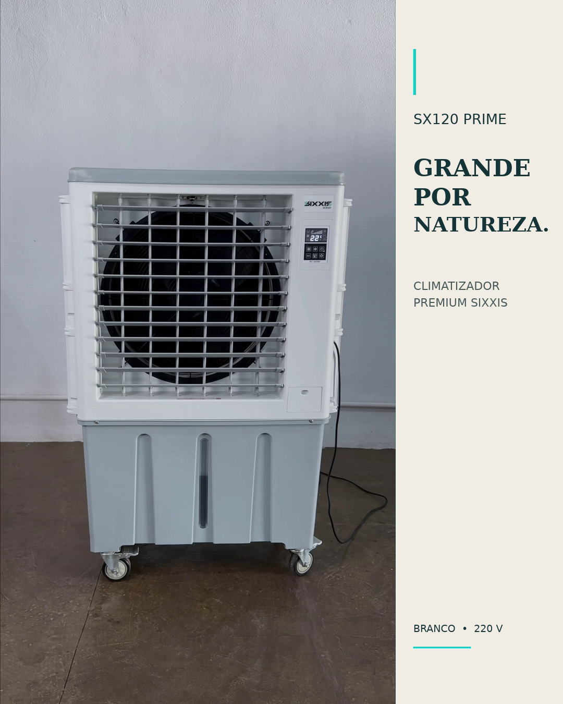
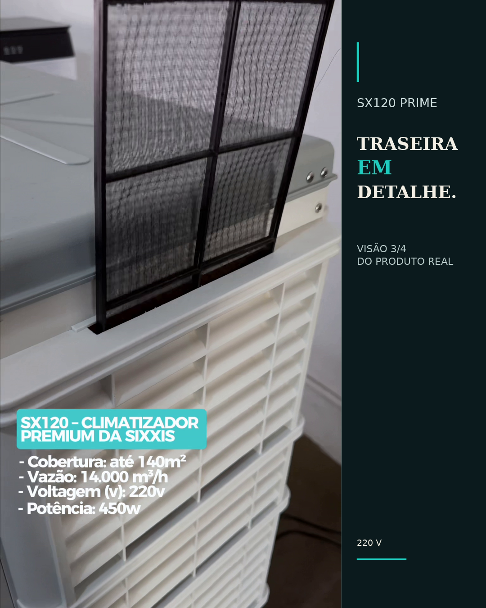
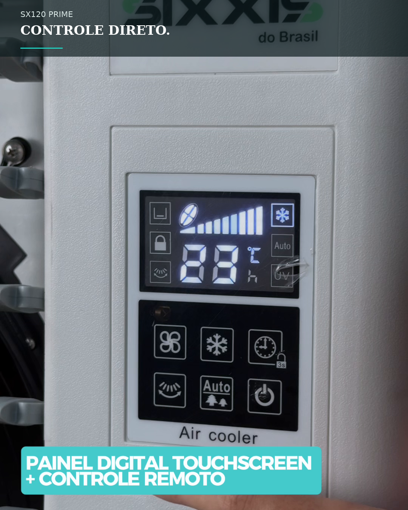
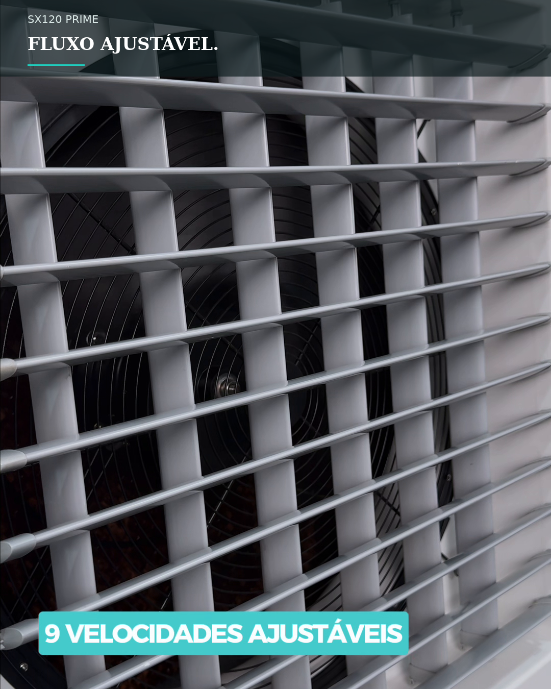

ClimatizadorSX120 Prime
Potência e estabilidade para grandes ambientes.
R$ 4.100,00
ou 10x de R$ 410,00 sem juros
R$ 3.895,00 no Pix5% de desconto
Principais números do SX120 Prime
Cabe no seu espaço?
Escolha a área aproximada. O medidor compara o valor com a cobertura oficial de até 140 m², sem extrapolar a especificação do produto.
Seu ambiente
Dentro da cobertura indicada. O SX120 Prime atende ambientes de até 140 m².
Estável por horas
Inversor + Corrente Alternada aumentam a resistência a oscilações da rede elétrica e mantêm maior estabilidade no uso prolongado.
16 malcance do fluxo de ar
9velocidades de operação
60 dBnível de ruído informado
Feito para a rotina
Comandos diretos, oscilação automática e um reservatório dimensionado para longos períodos de uso.
- Oscilação horizontal automática
- Oscilação vertical manual
- Filtro anti-pó
- Rodízios para mobilidade
SX120 Prime Branco · produto real
6 vistas. Nenhum detalhe inventado.
Uma leitura editorial do aparelho em uso, construída exclusivamente com frames dos vídeos oficiais aprovados pela Sixxis.




Imagens preservadas em 4:5, sem recorte automático, reconstrução, recoloração ou geração por IA.
95% menos energia
R$ 1.683de economia estimada por mês
Comparação publicada pela Sixxis contra três aparelhos de ar-condicionado de 30.000 BTU para climatizar 140 m².
Base informada: 8 h/dia × 30 dias × R$ 0,85/kWh. O consumo real varia conforme uso, ambiente e tarifa.
Ficha completa
Todos os dados técnicos publicados no produto, organizados para comparação rápida.
- Marca
- Sixxis
- Modelo
- SX120 Prime
- Capacidade do tanque
- 120 L
- Vazão de ar
- 14.000 m³/h
- Potência
- 450 W
- Tensão / frequência
- 220 V / 60 Hz
- Cobertura
- Até 140 m²
- Alcance do fluxo
- 16 m
- Velocidades
- 9
- Consumo de água
- 6 a 15 L/h
- Nível de ruído
- 60 dB
- Ventilação
- Hélice
- Oscilação vertical
- Manual
- Oscilação horizontal
- Automática
- Eficiência energética
- A
- Peso
- 38 kg
- Dimensões
- 92 × 49 × 141 cm
- Acabamento
- Preto e branco
- Garantia
- 12 meses
- Painel evaporativo
- 4 cm
- Filtro anti-pó
- Sim
- Controle
- Digital + remoto
Quem compra, recomenda
Avaliação agregada publicada na página oficial do SX120 Prime.
18 avaliações verificadas
Compra sem dúvida
Suporte humano antes, durante e depois da entrega.
30 anosde mercado brasileiro
12 mesesde garantia oficial Sixxis
Fábricaassistência e peças oficiais
Brasilentrega para todo o país
Dúvidas de compra
O SX120 Prime precisa de instalação? Não. É plug-and-play: escolha a versão 220 V, conecte à tomada compatível, abasteça o reservatório e opere.
Qual área ele atende? A cobertura publicada é de até 140 m². O resultado depende de ventilação, incidência solar, layout e condições do ambiente.
Ele substitui o ar-condicionado? São tecnologias diferentes. O climatizador promove circulação e umidificação do ar e não usa compressor para refrigerar um ambiente fechado.
O controle remoto está incluso? Sim. A ficha oficial informa controle digital com controle remoto.
Qual é a voltagem? Este produto é 220 V / 60 Hz. A seleção é obrigatória antes da compra.
Qual é a garantia? A garantia oficial publicada é de 12 meses, com assistência e peças Sixxis.
SX120 Prime
14.000 m³/h, 120 L e até 140 m². Em 10x de R$ 410,00 sem juros ou R$ 3.895,00 no Pix.
Escolher 220V